LGBT Discrimination
ECON 383: Economics of Discrimination
Winter 2018
Labor market outcomes
- How do gender and sexual orientation affect labor market outcomes (employment, wages, etc)?
- How are group perceptions formed? How might they change?
- Two recent papers:
- Gender, Sexual Orientation, and Behavioral Norms in the Labor Market
- Do Laws Shape Attitudes? Evidence from Same-Sex Relationship Recognition Policies in Europe
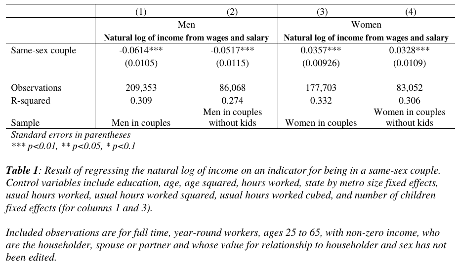
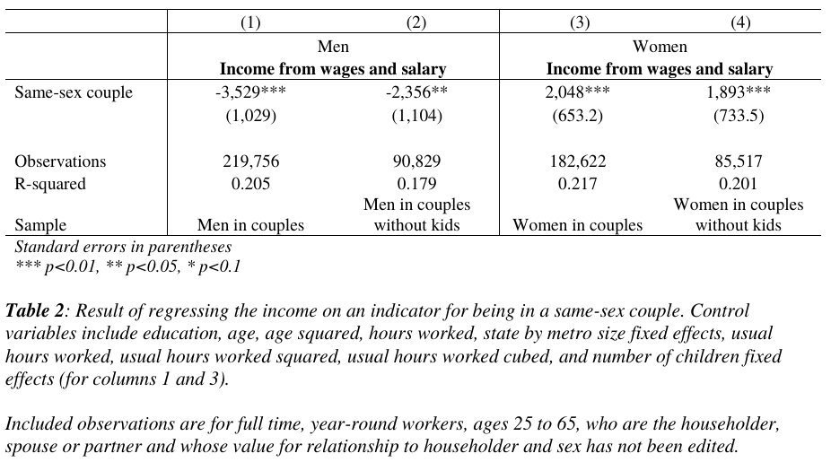
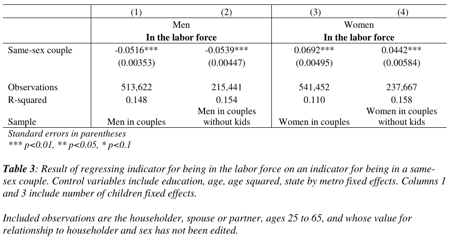
Causality
- Why do men in same-sex couples earn/work less? Why do women in same-sex couples earn/work more? (Relative to opposite-sex couples)
- Demand side: Are employers discriminating/prejudiced?
- Supply side: Are the work decisions different on average for same-sex couples?
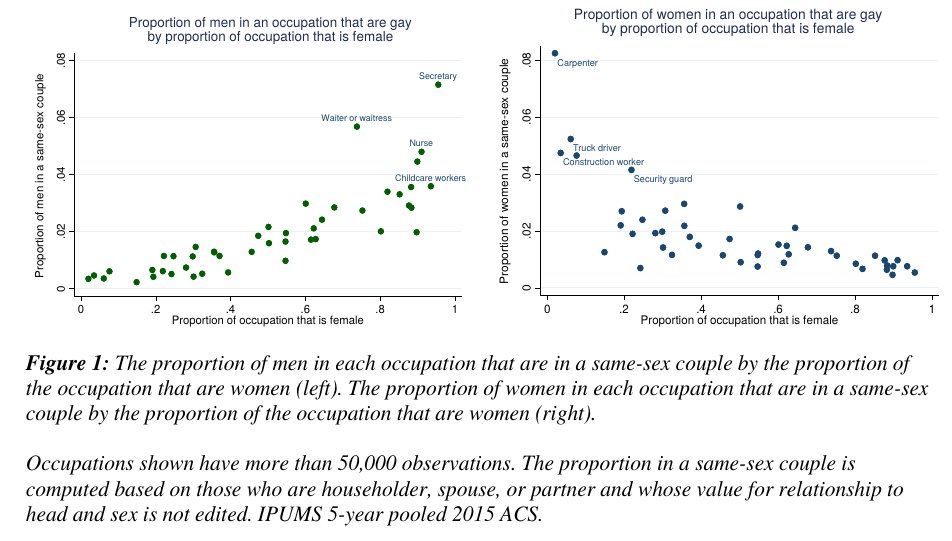
Preferences vs perceptions
- Are people in same-sex relationships more likely to have "opposite gender" traits?
- Do employers perceive people in same-sex relationships to have opposite gender traits?
- These questions likely not independent of each other (outcomes cause perceptions which cause outcomes)
Experiment
- Send fictitious resumes to employers
- Manipulate sex, gender traits, sexual orientation
- Do employers have expectations about how women should act with respect to gender traits?
- Do employers have expectations about how LGBT applicants should act?
- Are the gender expectations different for LGBT applicants?
Manipulating gender traits
- Assign different words to "objective" portion of resume
- Male words:
aggressive, enterprising, assertive, bold, confident, self-starter, achiever, dynamic
- Female words:
nurturing, caring, sympathetic, kind, supportive, encouraging, helpful, cooperative
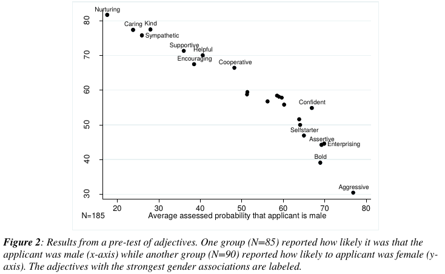
Manipulating sexual orientation
- Randomize membership in various college groups
- LGBT groups:
For example, one non-LGBT activity was labeled “Student Activities Board” and described how the applicant “planned and organized events promoting diversity.”
Mechanical Turk
- Resumes evaluated on Mechanical Turk platform
- Participants told they were helping sort resumes for a real company
- Resumes scored based on predetermined characteristics
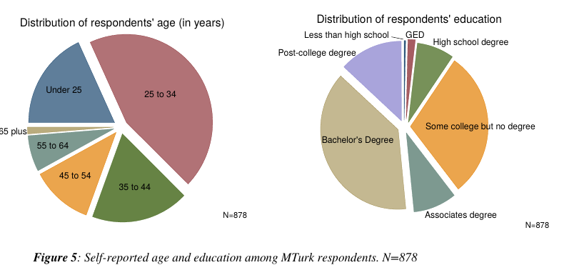
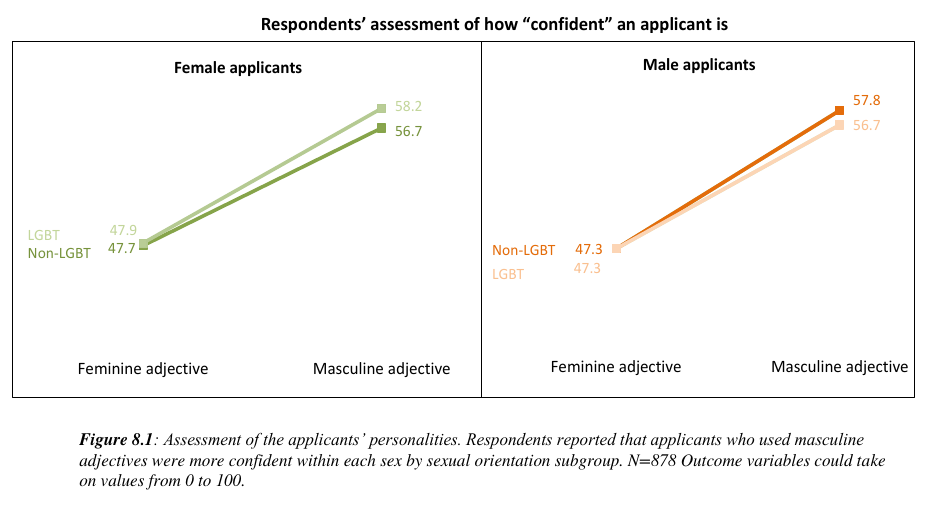
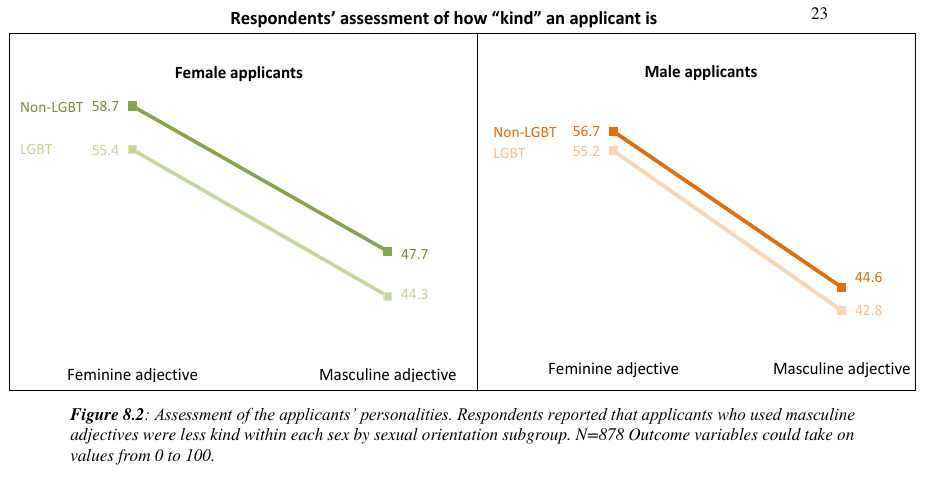
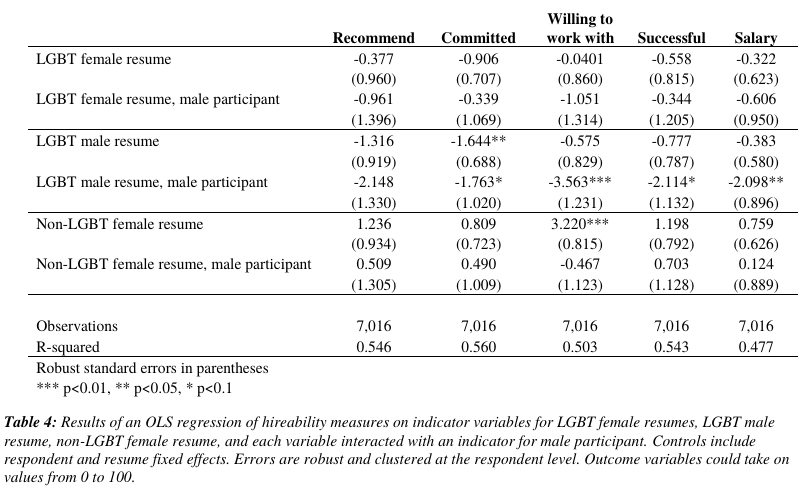
Backlash effect
- Women experience negative reactions when they engage in "male" behavior
- In this case, are females punished for using "male" words in their resumes?
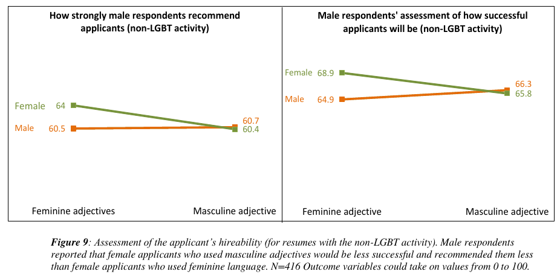
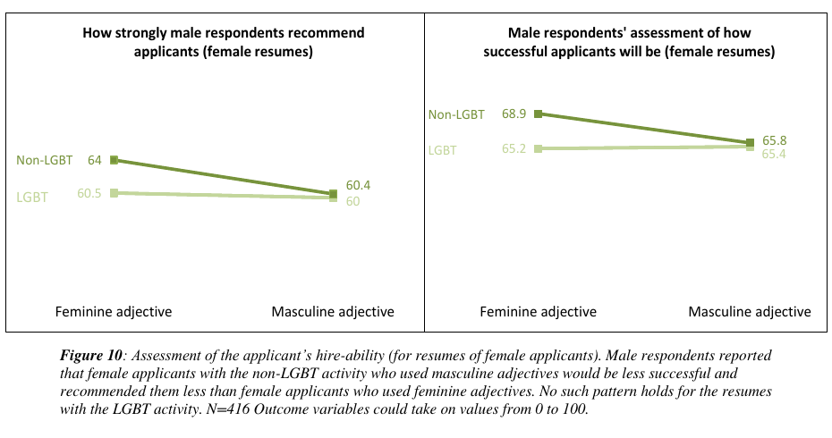
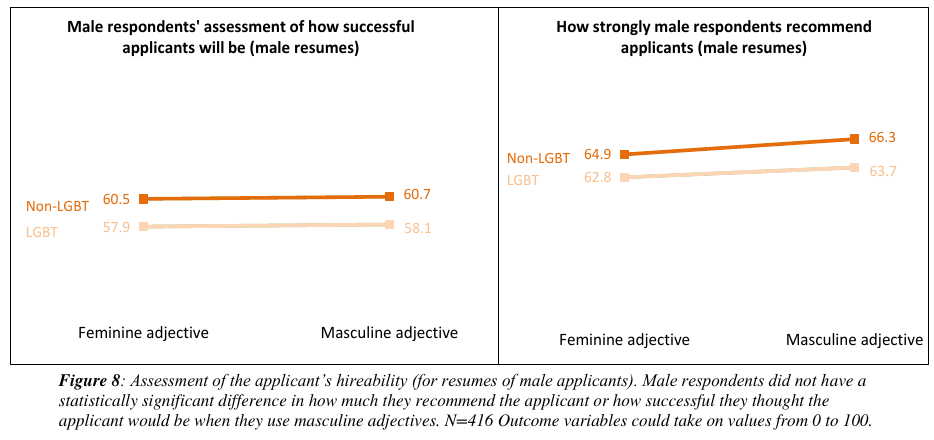
Female respondents
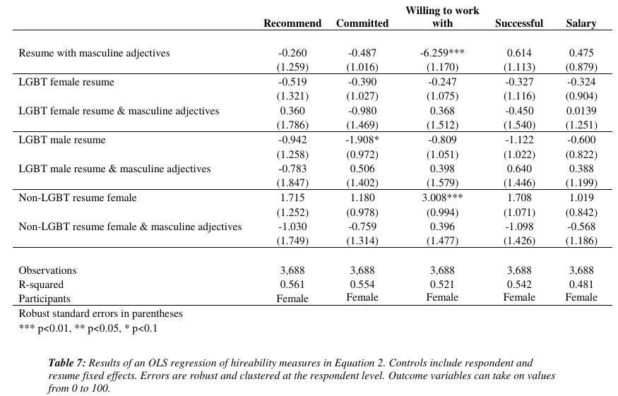
Social attitudes
- Where do these attitudes about gender and sexual orientation come from?
- Can they change?
- Research question: How do changes in laws affect attitudes toward certain groups?
Measuring attitudes
- European Social Surveys, 2002-2016
- Survey performed in 30 European countries
- Primary question of interest:
Do you believe that gay men and lesbians should be free to live their own life as they wish?
Policy changes
- Many countries are expanding rights for LGBT citizens
- This study: implementation of same-sex marriage or civil partnership laws
- Varies across countries, overall social attitudes not likely to affect years immediately before and after policy change

Event study analysis
- Compare average attitudes before and after policy change
- Policy changes in "year 0"
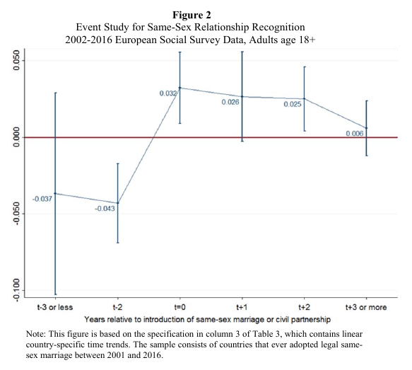

Placebo tests
- Identification threat: Countries that change policy are countries where social attitudes are changing
- Sudden shifts in social attitudes might cause policy changes
- LGBT attitudes likely to be related to attitudes toward other causes
- Sudden shifts toward "liberal" causes, in general
- Changes in policy would therefore be similarly correlated with other large shifts
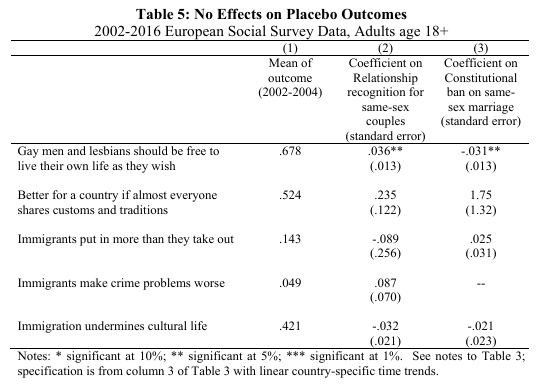
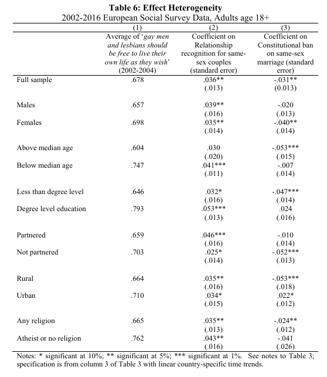